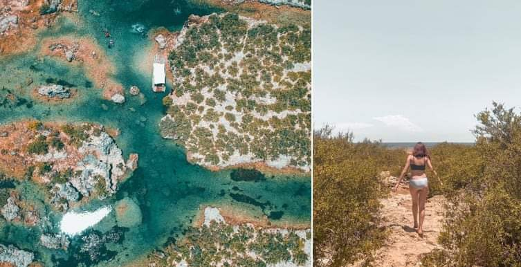
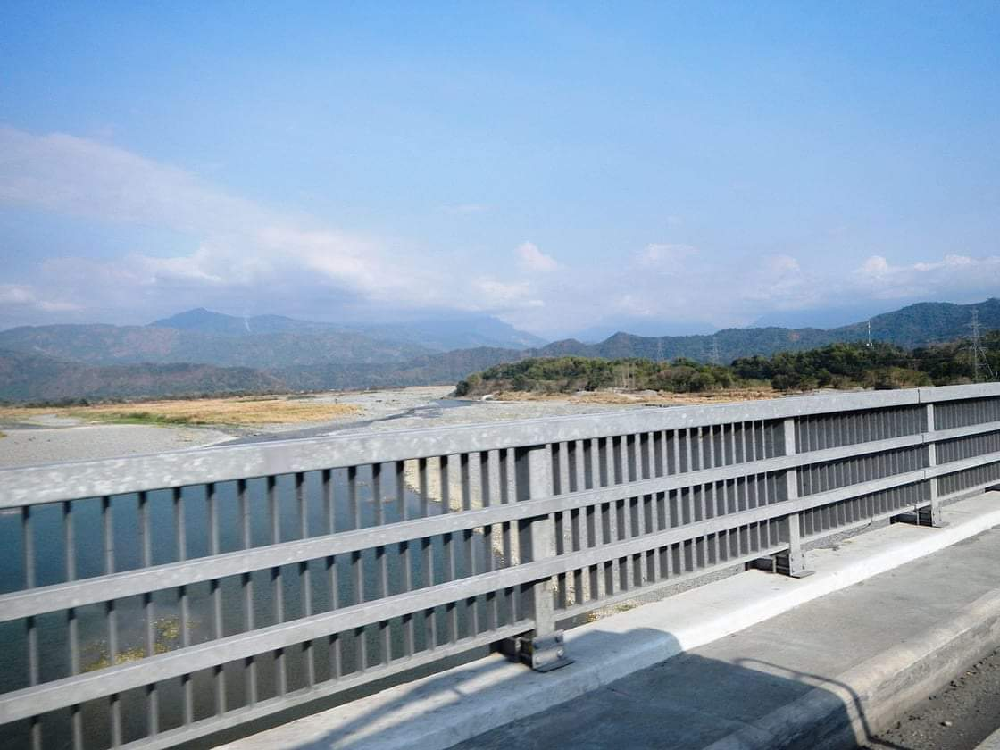
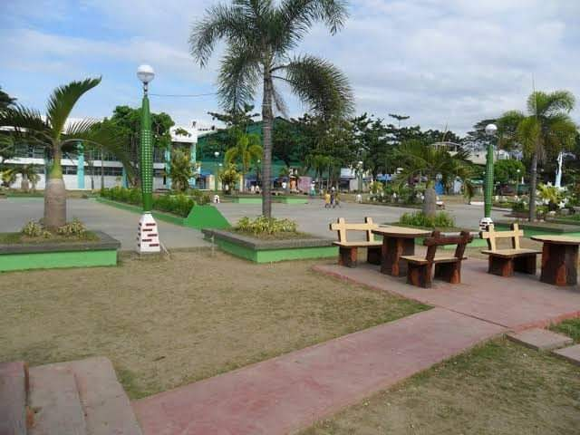
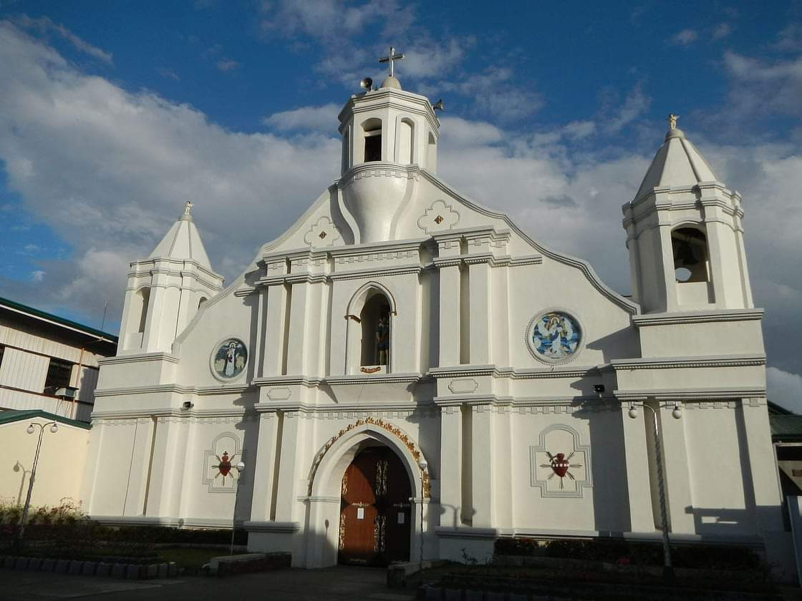
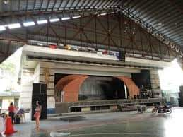

BALAOAN TOURIST ATTRACTIONS
IMMUKI ISLAND
Located in Barangay Paraoir, Immuki Island has become a prime swimming spot amidst slightly eerie but beautiful dead corals and mangroves. The island's unique name was derived from the unusual shape of it's main lagoon, which resembles a woman's external genitalia when viewed from above.
ST. NICHOLAS OF TOLENTINO CHURCH

A Catholic church in Balaoan.
BANGAR TOURIST ATTRACTIONS
AMBURAYAN RIVER
The setting of the Ilocano epic Biag ni Lam-ang, penned by the poet Pedro Bucaneg.
BANGAR TOWN PLAZA
SAINT CHRISTOPHER PARISH CHURCH
Construction was started in 1696 by Fr. Francisco Alvear, a Spanish Augustinian priest born in Liano, Santander, Spain who died in Bangar in 1698. It is only church with three bell towers.
IMELDA CULTURAL STAGE
A project done by the President Ferdinand E. Marcos, through the sponsorship of his Minister of Tourism Jose D. Aspiras and constructed by Engr. Bernardo Vergara, the General Manager of the Philippine Tourism Authority.